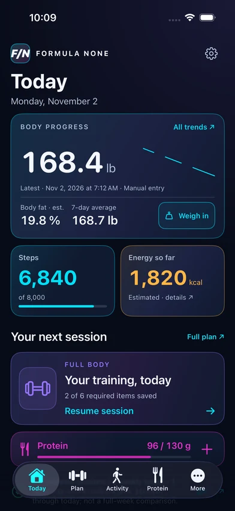
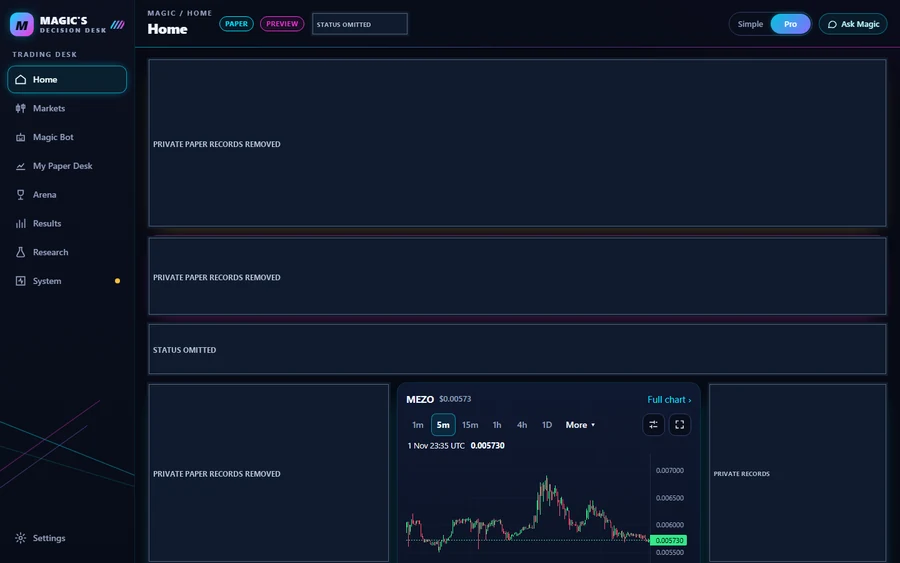

01 / OBSERVABILITY / AUTOMATION
Big Poppa Mining Command Center
A custom environment for understanding GPU performance, monitoring a mining workload and keeping operational authority deliberate.
Explore the projectDANIEL KAVANAGH / SELECTED WORK
AI-Assisted Software Development, Hardware Integration & Automation
I turn personal problems into software projects—and use AI to help build, test and refine the systems behind the screens.



THE BODY OF WORK
Each project reaches beyond its interface into data, runtime behavior or consumer hardware.
01 / OBSERVABILITY / AUTOMATION
A custom environment for understanding GPU performance, monitoring a mining workload and keeping operational authority deliberate.
Explore the project
02 / MARKET DATA / DECISION SYSTEMS
A paper-only cryptocurrency application that explores the complete path from public market observations to evaluation, modeled execution and review.
Explore the project
03 / NATIVE iOS / CONSUMER HARDWARE
A native iOS fitness project bringing workouts, activity, body trends, goals and nutrition together—and investigating the consumer devices behind the data.
Explore the projectSELECTED ENGINEERING
A dated, attended GPU trial recorded performance, confirmed process shutdown and independently checked power-limit restoration. The dashboard is only one layer.
A journal distinguishes an intention from a modeled fill, refusal or interrupted result. Recovery and account separation matter as much as the chart.
Scale profiles, packet assembly, calorie-counter timing and missing data are correctness problems. Hardware acceptance stays separate from source-code evidence.
THE BUILDER’S ROLE
I define the objective, review what was built, test assumptions and ask for corrections. The result comes from repeated decisions about behavior, evidence and scope.
See how I buildStart with a real workflow and an explicit boundary.
Use source, approved visuals and isolated tests to inspect the result.
Keep failures visible. Correct the implementation or narrow the claim.
A visual approval, a Simulator pass and a production release are different milestones.
TAKE THE STORY WITH YOU
Illustrated PDFs for quick reading, sharing or printing. Reviewed project summaries.
One-page introduction to GPU monitoring and mining safety.
Download PDF · 0.1 MBOne-page introduction to public data and paper decisions.
Download PDF · 0.2 MBOne-page introduction to native fitness and hardware work.
Download PDF · 0.1 MBThe complete story in a single illustrated page.
Download PDF · 0.1 MBProject pages also include the three six-page showcases. Full technical guides, editable files, private records and the complete private collection are excluded from this website.
FOLLOW THE WORK
Meaningful progress, with the evidence and limits intact. Follow Mining, Trading and Fitness as the work develops.
A considered digest of approved project milestones. Email subscriptions are being prepared.
Email signup will appear here when it is ready. Subscriptions will be optional, require confirmation, and include an unsubscribe link.
LATEST MILESTONES
M7’s recorded 12-step real-device plan passed with iPhone Face ID and Windows Hello, and 14 simulated unauthorized requests were refused. M7f adds development hardening: 448 tests run, suite OK with one skipped, plus 31/31 simulated browser checks. Production authentication is NOT DEPLOYED. Trading is DISABLED.
Production authentication NOT DEPLOYED · Trading DISABLED
Read the milestoneTHREE PROJECTS. ONE BUILDER.
Explore the interfaces. Follow the engineering. See exactly what is implemented, what was tested and what comes next.